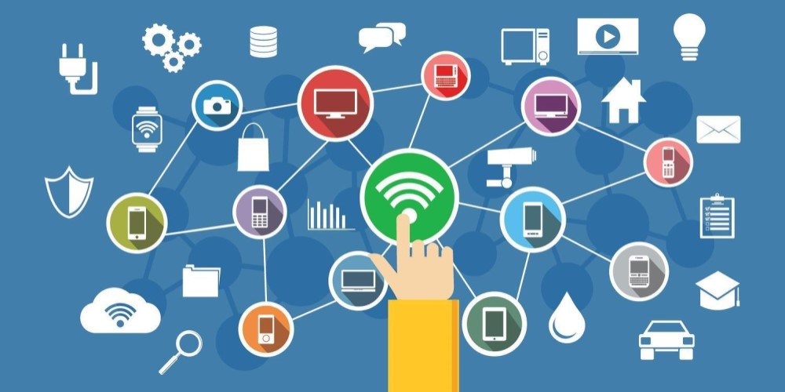

Mikä on tietoverkko?
Tietokoneverkko on tietokoneiden ja niitä yhdistävien tietoliikenneyhteyksien muodostama tietoliikenneverkko. Verkon avulla tietokoneet voivat viestiä keskenään sekä jakaa resursseja ja digitaalista informaatiota. Tyypillisesti tieto välitetään tietokoneverkoissa erilaisina paketteina.

Mikä on Internet?
Internet on maailmanlaajuinen toisiinsa kytkettyjen tietoverkkojen järjestelmä. Se koostuu miljoonista tietoverkoista, jotka kytkeytyvät toisiinsa erilaisten teknisten laitteistojen avulla. Internetissä on laaja valikoima erilaisia tietovarantoja ja -palveluita, kuten esimerkiksi web-sivut, sähköposti, puhelinpalvelut ja nettipelit.
Mitä tarkoittaa verkkopalvelu?
Verkkopalvelu tarkoittaa tietokoneverkkoon liitetyn tietojärjestelmän antamaa palvelua. Sen voi määritellä myös Internetissä olevaksi multimedia- tai sisältökokonaisuudeksi. Verkkopalvelun synonyymeja ovat muun muassa verkkosivusto, www-sivusto, nettisivut.
Mitä verkkotunnus tarkoittaa?
Internetin verkkotunnukset ovat nimiä, joiden avulla verkkoon kytkettyihin koneisiin voidaan viitata helpommin muistettavalla tavalla kuin numeroista muodostuvilla IP-osoitteilla. Verkkotunnukset muutetaan IP-osoitteiksi ínternetin nimipalvelujärjestelmän avulla.